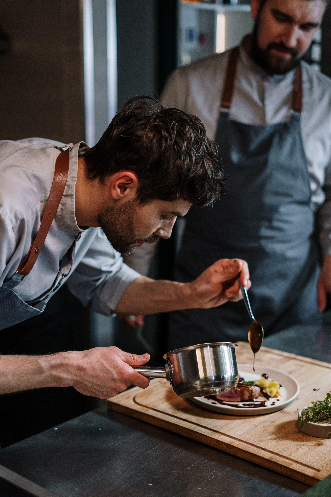

Félix Jimenez se levanta todos los días a las cuatro de la mañana...
Como buen practicante de la filosofía Shokuni, que aprendió de un maestro japonés, se enfoca en ser cada día mejor que el anterior con el fin de lograr la excelencia. Una exigencia que le ha permitido, en su país natal, España, obtener una Estrella Michelín y dos Soles Repsol, justamente, distinciones a la excelencia culinaria.
Omakase
"El Sushi no se hace con las manos, se hace con el alma y el corazón."

Delicias Japonesas, sabores del Sol Naciente

Nuestra entrega con Colombia
Félix Jiménez, maestro del sushi, es el chef ejecutivo del nuestro restaurante Viva la Vida, quien elaboró la carta con una oferta de comida japonesa purista con fusión de sabores colombianos.
Conoce a nuestro equipo
Conéctate con las personas que te atienden con cariño.
Cada rollo de sushi que preparo es una pequeña obra de arte. Me encanta ver cómo mis creaciones traen sonrisas a los comensales y los transportan a Japón en cada bocado.

Camila Gómez - Sushi Chef
El teppanyaki es mi pasión y mi forma de expresión. Ver a los clientes emocionados mientras cocino frente a ellos es lo que hace que cada día en la parrilla sea único y gratificante.
Juan López - Maestro Teppanyaki
Mi objetivo es que cada una de las persona que cruce la puerta de nuestro gran restaurante pueda llegar a sentir una comoda, entretenida y cálida bienvenida.
Isabella Rodríguez - Anfitriona

Un Viaje Culinario Impregnado de Espiritualidad y Tranquilidad
Aquí todo está pensado para que los comensales vivan momentos especiales en medio de un ambiente espiritual y de tranquilidad que nace de la forma de ser de este chef, para quien la cocina es mucho más que una mezcla de ingredientes. Es una vía para transmitir emociones y experiencias. Cada plato que preparo es una expresión de mi pasión por la comida y mi deseo de llevar a las personas en un viaje a través de los sabores y las sensaciones.